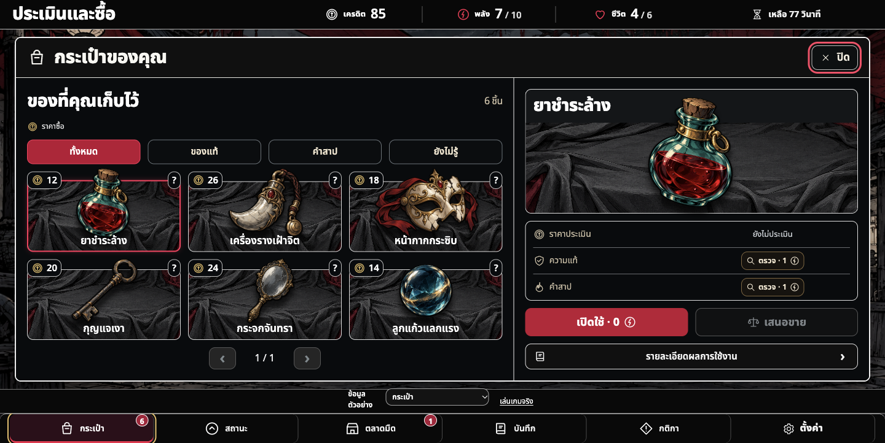
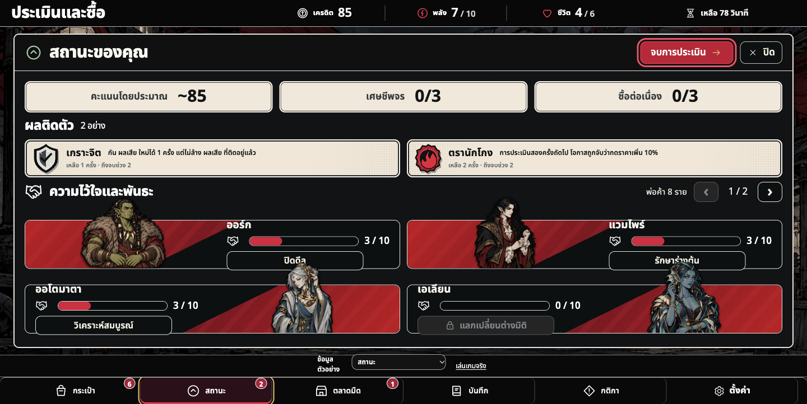
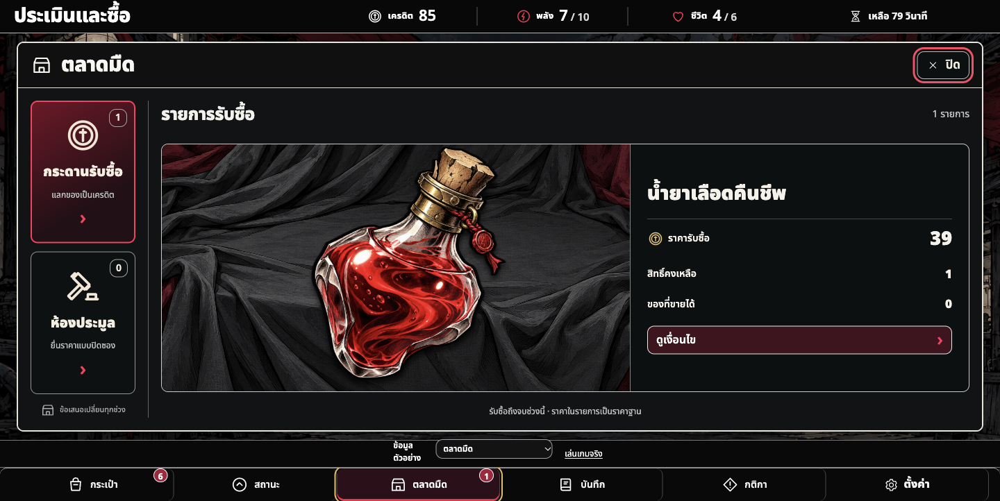
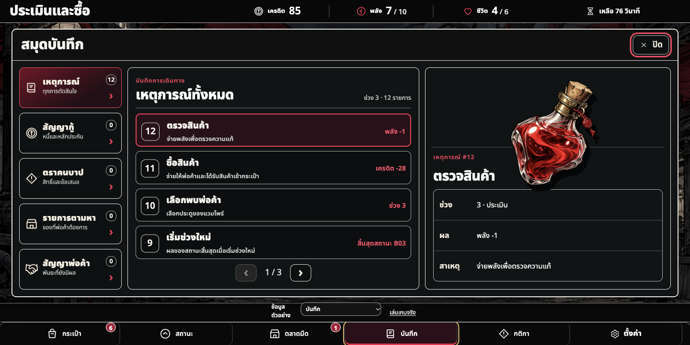
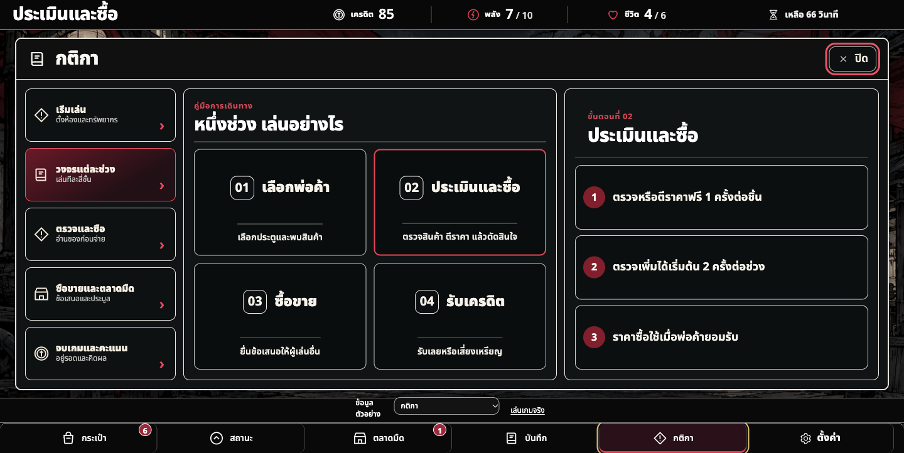
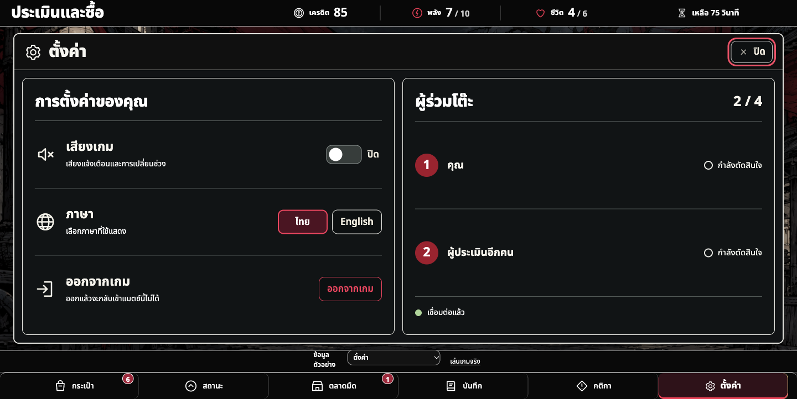
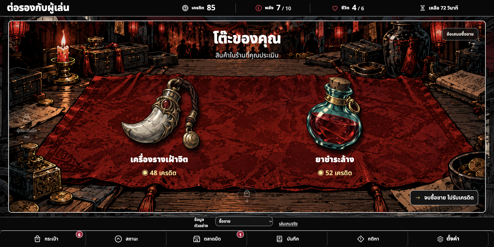
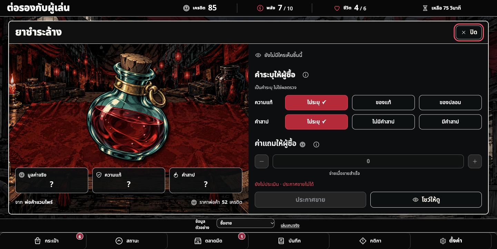

inventory · 1440×722

ผู้ใช้อนุมัติภาพชุดนี้เป็น baseline เมื่อ2026-10-30 จาก implementation ใน apps/comic; ไม่ใช่การอนุมัติให้ออกแบบหน้าอื่นใหม่ และไม่ยกเว้นผลตรวจ pixel/functional ที่ยังไม่ผ่าน. กรอบและความสมมาตรตรวจด้วย contract แยกจากพิกเซล.
Continuity / commands · Audit · Confirmed / pending decisions







